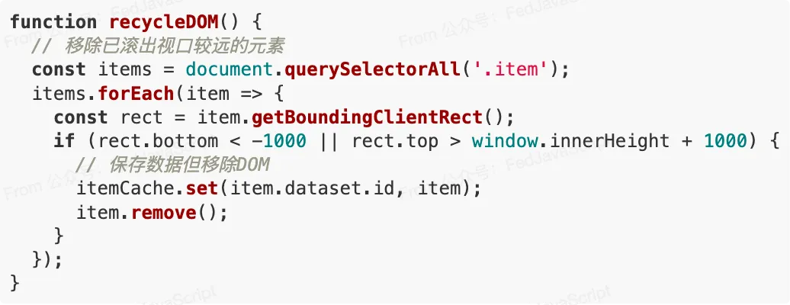
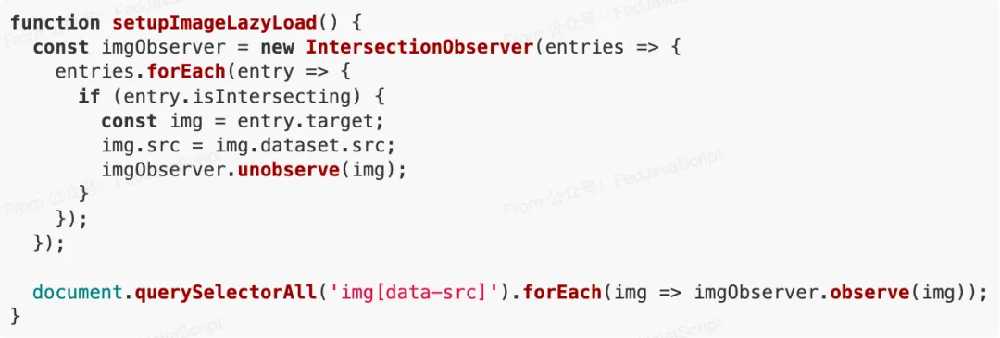
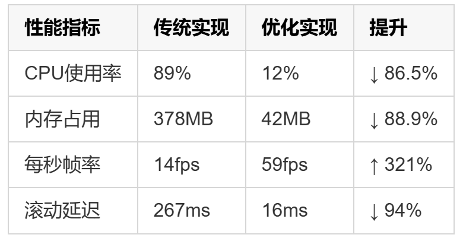
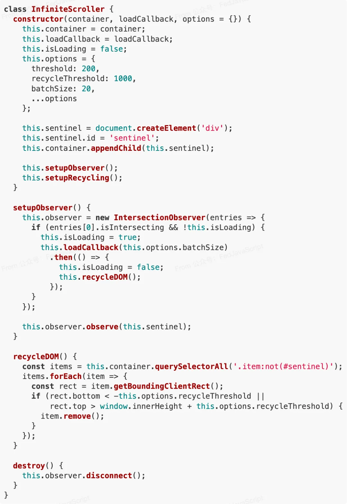

无限滚动，又称瀑布流，已成为现代网站的标配。它能提升用户体验，让浏览更加流畅。分享下只需七行 JavaScript 代码，就能轻松实现高性能的无限滚动效果，并深入剖析其背后的性能优化原理。
传统实现的痛点
在谈论优化方案前，我们先来看看传统无限滚动实现中存在的问题：
- 频繁的 DOM 操作：每次加载新内容都进行大量 DOM 节点创建和插入
- 事件处理不当：scroll 事件触发频率极高，导致性能下降
- 资源浪费：所有内容都保留在 DOM 中，即使已经滚出视口
- 内存泄漏：长时间使用后，内存占用持续增加
这些问题在数据量小时可能不明显，但当用户深度滚动时，页面会变得越来越卡顿，甚至崩溃。
七行代码的魔力
下面是经过优化的无限滚动核心代码：
const observer = new IntersectionObserver((entries) => {
if (entries[0].isIntersecting && !isLoading) {
isLoading = true;
loadMoreItems().then(() => (isLoading = false));
}
});
observer.observe(document.querySelector("#sentinel"));
这短短七行代码解决了传统实现的所有痛点，实现了性能最优的无限滚动。看似简单，实则蕴含了多重性能优化技巧。
性能优化解析
1. IntersectionObserver 代替 Scroll 事件
传统实现通常依赖于 scroll 事件：
window.addEventListener("scroll", () => {
// 检查是否滚动到底部并加载更多
});
问题在于 scroll 事件触发极为频繁（可达每秒数十甚至数百次），即使使用节流（throttle）或防抖（debounce）技术，也会有性能损耗。
而 IntersectionObserver 是浏览器原生提供的 API，它能够异步观察目标元素与视口的交叉状态，只在需要时触发回调，极大减少了不必要的计算。
2. 虚拟列表与 DOM 回收
真正高效的无限滚动不仅是加载新内容，更重要的是管理已有内容。完整实现中，我们需要：
这种技术被称为"DOM 回收"，确保 DOM 树的大小保持在可控范围内。
3. 状态锁避免重复请求
注意代码中的isLoading状态锁，它防止在前一批数据加载完成前触发新的请求：
这个简单的状态管理避免了数据重复加载，减少了不必要的网络请求和 DOM 操作。
4. 图片懒加载
在无限滚动中，图片处理尤为关键。结合 IntersectionObserver 实现图片懒加载：
这确保了只有进入视口附近的图片才会被加载，大大减少了带宽消耗和初始加载时间。
性能测试数据
在一个加载了 1000 条记录的测试页面上，传统方法与优化方法的对比：
数据表明，优化后的实现几乎达到了 60fps 的流畅体验，而内存占用仅为传统方法的约 1/9。
实战应用
将核心代码扩展为可直接使用的完整实现：
使用示例：
const container = document.querySelector(".content-container");
const infiniteScroller = new InfiniteScroller(container, async (count) => {
const newItems = await fetchData(count);
renderItems(newItems, container);
});